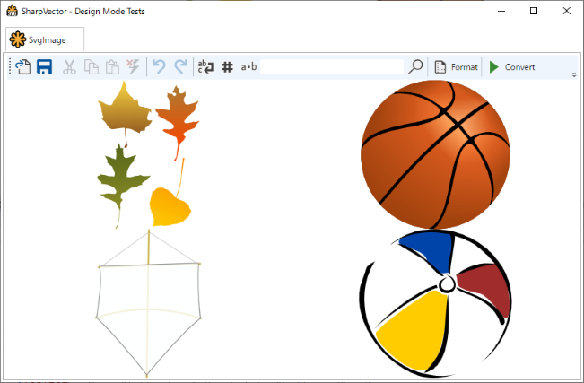
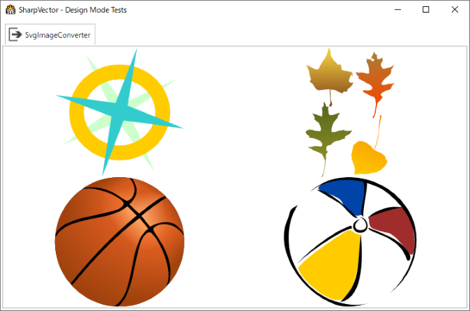

SVG Markup Extensions
These are WPF markup extensions or type converters for handling the SVG files in WPF applications. Currently, SharpVectors provides two markup extensions, SvgImageExtension and SvgImageConverterExtension, which convert an SVG source document to a DrawingImage.
These classes derived from SvgImageBase class, which extents the WPF markup extension base class MarkupExtension as shown below.
Markup extensions in WPF are not dependency objects, and cannot support data binding. The SvgImageConverterExtension class implements the IValueConverter interface to enable data binding supports on the markup extension. Use this where data binding is required or the SVG Image Controls (SvgBitmap, SvgIcon), which also provide static images.
classDiagram
class MarkupExtension
class IValueConverter
<<abstract>> MarkupExtension
<<interface>> IValueConverter
MarkupExtension <|-- SvgImageBase
SvgImageBase <|-- SvgImageExtension
SvgImageBase <|-- SvgImageConverterExtension
IValueConverter <|-- SvgImageConverterExtension
MarkupExtension: +ProvideValue(IServiceProvider)* object
IValueConverter: +Convert(object, Type, object, CultureInfo)* object
class SvgImageBase{
<<abstract>>
+bool OptimizePath
+bool TextAsGeometry
+bool IncludeRuntime
+string AppName
#GetDrawing(Uri) DrawingGroup
#GetImage(Uri) DrawingImage
#GetAppName() void
#GetEntryAssembly() Assembly
#GetExecutingAssembly() Assembly
#IsDesignMode(IServiceProvider) bool
}
class SvgImageExtension{
<<sealed>>
+string Source
+ProvideValue(IServiceProvider) object
}
class SvgImageConverterExtension{
<<sealed>>
+ProvideValue(IServiceProvider) object
+Convert(object, Type, object, CultureInfo) object
}
- As shown in the diagram above of the SvgImageBase class, the relevant rendering settings or options are available on these markup extensions as properties.
- The additional property, SvgImageBase.AppName, is used to specify the name of the source assembly in cases where the SVG document is a resource in a .NET assembly. This provides a hint to the system when resolving the URI to the resource file, especially in the design-mode.
- The main property here is the SvgImageExtension.Source, which is the path to the SVG file, and the file itself can be located in the following:
- Web/Internet: The path in this case is the HTTP, FTP, etc scheme URI of the file.
- Local Computer Disk: The path is the absolute or the relative URI to the SVG file.
- Resources: The path is the Microsoft Pack URI of the SVG resource file.
Note
The SVG Markup Extensions are lightweight objects, and unlike the SVG Image Controls, these are not WPF controls. However, if the target use is within image control, then the SVG image controls are preferred.
SvgImageExtension Markup Extension
This is the basic SVG markup extension to provide SVG static images, and as stated above does not support data binding. The source codes of the WpfTestResourceSvg sample is used for illustration.
The XAML source is shown below: SVG resource files are also used as toolbar images.
<Window x:Class="WpfTestResourceSvg.MainWindow"
xmlns="http://schemas.microsoft.com/winfx/2006/xaml/presentation"
xmlns:x="http://schemas.microsoft.com/winfx/2006/xaml"
xmlns:d="http://schemas.microsoft.com/expression/blend/2008"
xmlns:mc="http://schemas.openxmlformats.org/markup-compatibility/2006"
xmlns:svgc="http://sharpvectors.codeplex.com/svgc/"
xmlns:local="clr-namespace:WpfTestResourceSvg"
mc:Ignorable="d"
Title="SharpVector - Design Mode Tests" Height="720" Width="960" Icon="App.ico" WindowStartupLocation="CenterScreen">
<DockPanel LastChildFill="True" Margin="3">
<TabControl>
<TabItem x:Name="tabSvgImage">
<TabItem.Header>
<StackPanel Orientation="Horizontal">
<Image Height="24px" Width="24px" Source="{svgc:SvgImage Source=/Images/SvgLogoBasic.svg, AppName=WpfTestResourceSvg}" />
<TextBlock Text="SvgImage" Margin="3" VerticalAlignment="Center" MinWidth="70"/>
</StackPanel>
</TabItem.Header>
<DockPanel LastChildFill="True">
<ToolBar DockPanel.Dock="Top" Height="36">
<ToolBar.Resources>
<Style TargetType="{x:Type Image}">
<Style.Triggers>
<DataTrigger Binding="{Binding RelativeSource={RelativeSource AncestorType={x:Type ButtonBase}, AncestorLevel=1}, Path=IsEnabled}" Value="False">
<Setter Property="Opacity" Value="0.30" />
</DataTrigger>
</Style.Triggers>
</Style>
</ToolBar.Resources>
<Button>
<Image Source="{svgc:SvgImage Source=/Images/Open.svg, AppName=WpfTestResourceSvg}" Height="24" Width="24"/>
</Button>
<Button>
<Image Source="{svgc:SvgImage Source=/Images/Save.svg, AppName=WpfTestResourceSvg}" Height="24" Width="24"/>
</Button>
<Separator/>
<Button Command="Cut" ToolTip="Cut To Clipboard">
<Image Source="{svgc:SvgImage Source=/Images/Cut.svg, AppName=WpfTestResourceSvg}" Height="24" Width="24"/>
</Button>
<Button Command="Copy" ToolTip="Copy To Clipboard">
<Image Source="{svgc:SvgImage Source=/Images/Copy.svg, AppName=WpfTestResourceSvg}" Height="24" Width="24"/>
</Button>
<Button Command="Paste" ToolTip="Paste From Clipboard">
<Image Source="{svgc:SvgImage Source=/Images/Paste.svg, AppName=WpfTestResourceSvg}" Height="24" Width="24"/>
</Button>
<Button Command="Delete" ToolTip="Delete Selection">
<Image Source="{svgc:SvgImage Source=/Images/Delete.svg, AppName=WpfTestResourceSvg}" Height="24" Width="24"/>
</Button>
<Separator/>
<Button Command="Undo" ToolTip="Undo">
<Image Source="{svgc:SvgImage Source=/Images/Undo.svg, AppName=WpfTestResourceSvg}" Height="24" Width="24"/>
</Button>
<Button Command="Redo" ToolTip="Redo">
<Image Source="{svgc:SvgImage Source=/Images/Redo.svg, AppName=WpfTestResourceSvg}" Height="24" Width="24"/>
</Button>
<Separator/>
<CheckBox IsChecked="{Binding ElementName=textEditor,Path=WordWrap}" ToolTip="Word Wrap">
<Image Source="{svgc:SvgImage Source=/Images/WordWrap.svg, AppName=WpfTestResourceSvg}" Height="24" Width="24"/>
</CheckBox>
<CheckBox IsChecked="{Binding ElementName=textEditor,Path=ShowLineNumbers}" ToolTip="Show Line Numbers">
<Image Source="{svgc:SvgImage Source=/Images/Number.svg, AppName=WpfTestResourceSvg}" Height="24" Width="24"/>
</CheckBox>
<CheckBox IsChecked="{Binding ElementName=textEditor,Path=Options.ShowEndOfLine}" ToolTip="Show End Of Line">
<Image Source="{svgc:SvgImage Source=/Images/Space.svg, AppName=WpfTestResourceSvg}" Height="24" Width="24"/>
</CheckBox>
<TextBox x:Name="searchTextBox" Width="200" />
<Button>
<Image Source="{svgc:SvgImage Source=/Images/Find.svg, AppName=WpfTestResourceSvg}" Height="24" Width="24"/>
</Button>
<Separator/>
<Button x:Name="formatInput" ToolTip="Format Document">
<StackPanel Orientation="Horizontal">
<Image Source="{svgc:SvgImage Source=/Images/Format.svg, AppName=WpfTestResourceSvg}" Height="24" Width="24"/>
<TextBlock Margin="3,0,0,0" VerticalAlignment="Center">Format</TextBlock>
</StackPanel>
</Button>
<Separator/>
<Button x:Name="convertInput" ToolTip="Convert Document">
<StackPanel Orientation="Horizontal">
<Image Source="{svgc:SvgImage Source=/Images/Run.svg, AppName=WpfTestResourceSvg}" Height="24" Width="24"/>
<TextBlock Margin="3,0,0,0" VerticalAlignment="Center">Convert</TextBlock>
</StackPanel>
</Button>
</ToolBar>
<UniformGrid Rows="2" Columns="2">
<Image Source="{svgc:SvgImage Source=/Resources/autum_leaf.svg, AppName=WpfTestResourceSvg}" Stretch="Uniform"/>
<Image Source="{svgc:SvgImage Source=/Resources/basket.svg, AppName=WpfTestResourceSvg}" Stretch="Uniform"/>
<Image Source="{svgc:SvgImage Source=/Resources/kite.svg, AppName=WpfTestResourceSvg}" Stretch="Uniform"/>
<Image Source="{svgc:SvgImage Source=/Resources/beach_ball.svg, AppName=WpfTestResourceSvg}" Stretch="Uniform"/>
</UniformGrid>
</DockPanel>
</TabItem>
</TabControl>
</DockPanel>
</Window>
The following image shows the result of the above uses of the SvgImageExtension class:

Note
For more extensive illustration of the SvgImageExtension class in both C# and VB.NET, see the SvgImageSample and SvgImageSampleVB samples in the TutorialSamples/ControlSamplesWpf directory.
SvgImageConverterExtension Markup Extension
This is an extended implementation of the SVG markup extension to support data binding through the converter interface. As above, the source codes of the WpfTestResourceSvg sample is used for illustration.
The XAML source is shown below:
<Window x:Class="WpfTestResourceSvg.MainWindow"
xmlns="http://schemas.microsoft.com/winfx/2006/xaml/presentation"
xmlns:x="http://schemas.microsoft.com/winfx/2006/xaml"
xmlns:d="http://schemas.microsoft.com/expression/blend/2008"
xmlns:mc="http://schemas.openxmlformats.org/markup-compatibility/2006"
xmlns:svgc="http://sharpvectors.codeplex.com/svgc/"
xmlns:local="clr-namespace:WpfTestResourceSvg"
mc:Ignorable="d"
Title="SharpVector - Design Mode Tests" Height="720" Width="960" Icon="App.ico" WindowStartupLocation="CenterScreen">
<DockPanel LastChildFill="True" Margin="3">
<TabControl>
<TabItem x:Name="tabSvgImageConverter">
<TabItem.Header>
<StackPanel Orientation="Horizontal">
<Image Height="24px" Width="24px" Source="{svgc:SvgImage Source=/Images/Output.svg, AppName=WpfTestResourceSvg}" />
<TextBlock Text="SvgImageConverter" Margin="3" VerticalAlignment="Center" MinWidth="70"/>
</StackPanel>
</TabItem.Header>
<UniformGrid Rows="2" Columns="2">
<Image Source="{Binding Converter={svgc:SvgImageConverter}, ConverterParameter=https://dev.w3.org/SVG/tools/svgweb/samples/svg-files/compass.svg, Mode=OneWay}"/>
<Image Source="{Binding Converter={svgc:SvgImageConverter}, ConverterParameter=/Resources/autum_leaf.svg, Mode=OneWay}"/>
<Image Source="{Binding Converter={svgc:SvgImageConverter}, ConverterParameter=/Resources/basket.svg, Mode=OneWay}"/>
<Image Source="{Binding Converter={svgc:SvgImageConverter}, ConverterParameter=/Resources/beach_ball.svg, Mode=OneWay}"/>
</UniformGrid>
</TabItem>
</TabControl>
</DockPanel>
</Window>
The following image shows the result of the above uses of the SvgImageConverterExtension class:

Note
For more extensive illustration of the SvgImageConverterExtension class in both C# and VB.NET, see the SvgImageBindingSample and SvgImageBindingSampleVB samples in the TutorialSamples/ControlSamplesWpf directory.